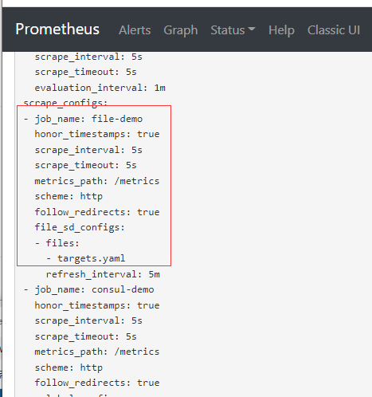
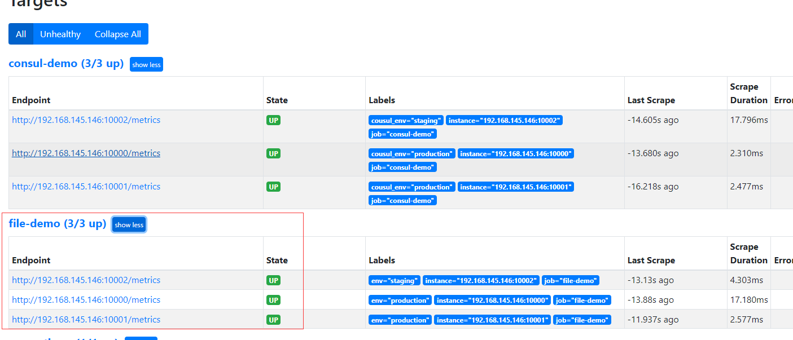
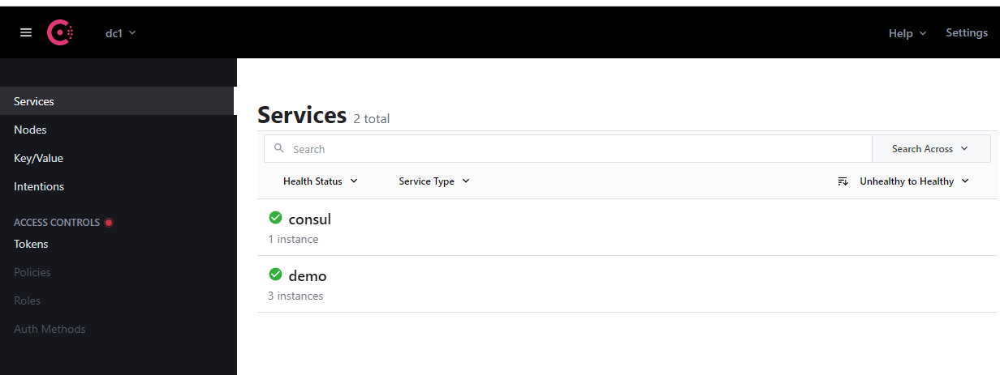
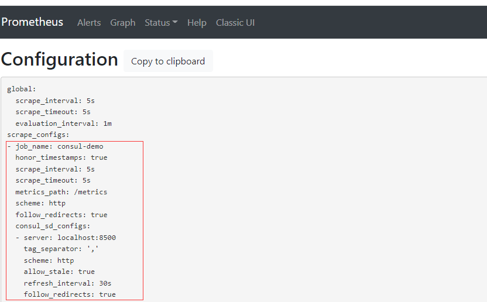
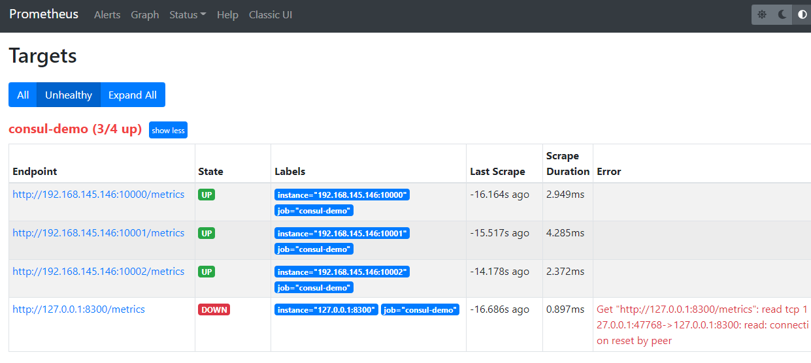
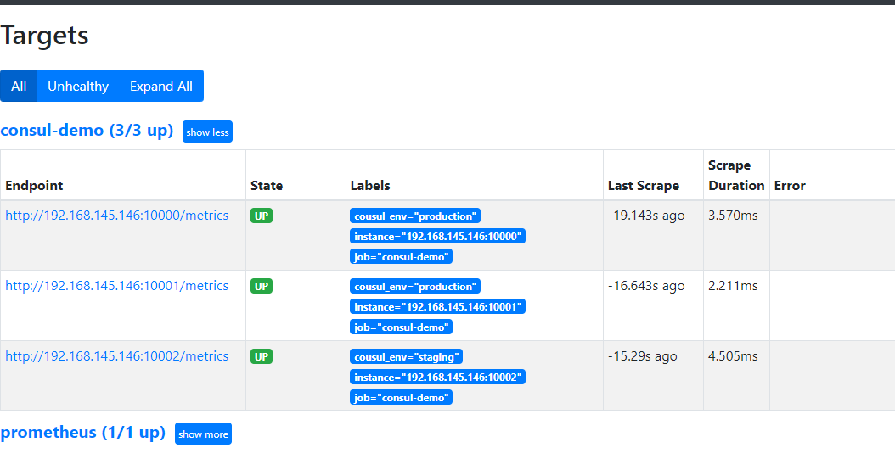
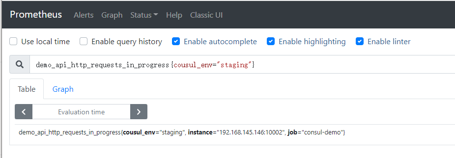

1.promtheus支持3种自动发现类型
- 文件发现服务
- consul自动发现
- dns //此类型很少用
2.基于文件的服务发现
在prometheus目录下创建targets.yaml
prome]# cat targets.yaml
- targets:
- "localhost:10000"
- "localhost:10001"
labels:
env: production
- targets:
- "loaclhost:10002"
labels: staging
配置到prometheus.yml
scrape_configs:
- job_name: "file-demo"
file_sd_config:
- files: ["targets.yaml"] ## 可以添加多个yaml，也可以是yml/json等格式
重启prometheus
后续可以直接修改targets.yaml文件，prome会热更新，不需要重启prome
配置生效：


consul自动发现
安装配置 Consul
在页面 https://www.consul.io/downloads 下载符合自己系统的安装文件：
# wget https://releases.hashicorp.com/consul/1.10.2/consul_1.10.2_linux_amd64.zip
# unzip consul_1.10.2_linux_amd64.zip
# 将 consul 二进制移动到 PATH 路径下去
# mv consul /usr/local/bin
# consul version
Consul v1.10.2
Revision 3cb6eeedb
Protocol 2 spoken by default, understands 2 to 3 (agent will automatically use protocol >2 when speaking to compatible agents)
编写配置文件
# cat demo-service.json
{
"services": [
{
"id": "demo1",
"name": "demo",
"address": "192.168.145.146",
"port": 10000,
"meta": {
"env": "production"
},
"checks": [
{
"http": "http://192.168.145.146:10000/api/foo",
"interval": "1s"
}
]
},
{
"id": "demo2",
"name": "demo",
"address": "192.168.145.146",
"port": 10001,
"meta": {
"env": "production"
},
"checks": [
{
"http": "http://192.168.145.146:10001/api/foo",
"interval": "1s"
}
]
},
{
"id": "demo3",
"name": "demo",
"address": "192.168.145.146",
"port": 10002,
"meta": {
"env": "staging"
},
"checks": [
{
"http": "http://192.168.145.146:10002/api/foo",
"interval": "1s"
}
]
}
]
启动，以dev模式显示更多日志
☸ ➜ consul agent -dev -config-file=demo-service.json -client 0.0.0.0
==> Starting Consul agent...
Version: '1.10.2'
Node ID: 'a4a9418c-7f7d-a2da-c81e-94d3d37601aa'
Node name: 'node2'
Datacenter: 'dc1' (Segment: '<all>')
Server: true (Bootstrap: false)
Client Addr: [0.0.0.0] (HTTP: 8500, HTTPS: -1, gRPC: 8502, DNS: 8600)
Cluster Addr: 127.0.0.1 (LAN: 8301, WAN: 8302)
Encrypt: Gossip: false, TLS-Outgoing: false, TLS-Incoming: false, Auto-Encrypt-TLS: false
==> Log data will now stream in as it occurs:
......
修改prometheus配置文件
# cat prometheus.yml
global:
scrape_interval: 5s
scrape_configs:
- job_name: "consul-demo" #增加consul发现
consul_sd_configs:
- server: "localhost:8500"
- job_name: "prometheus"
static_configs:
- targets: ["localhost:9090"]
修改完重启prometheus
访问consul：192.168.145.146:8500

访问prometheus并查看config是否更新及监控是否已经自动发现:192.168.145.146:9090


移除8300监控项
图上http://127.0.0.1:8300/metrics是consul自带的，没有提供metrics
- 修改prometheus配置文件进行过滤：
# cat prometheus.yml
global:
scrape_interval: 5s
scrape_configs:
- job_name: "consul-demo"
consul_sd_configs:
- server: "localhost:8500"
relabel_configs:
- action: keep
source_labels: [__meta_consul_service]
regex: demo
- action: labelmap
regex: __meta_consul_service_metadata_(.*)
- job_name: "prometheus"
static_configs:
- targets: ["localhost:9090"]
prometheus重启即可

